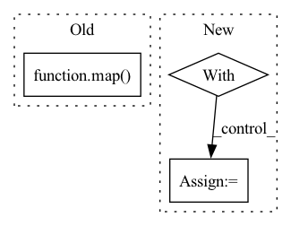

Pattern ID :15186
Before Change
for index, vocab in list(zip(range(0, len(self.vocab)), self.vocab)):
self.vocab_dict[vocab] = index
self.index_dd = np.array(list(map( lambda y: np.array(list(map(lambda x:
self.vocab_dict[x], y.split()))), data) ))
self.idx2token = {v: k for (k, v) in self.vocab_dict.items()}
self.bow = get_bag_of_words(self.index_dd, len(self.vocab))
After Change
indices = []
data = []
vocabulary = {}
with open(self.file_name, "r") as filino:
docs = filino.readlines()
for d in docs:
for term in d.split():In pattern: SUPERPATTERN
Frequency: 3
Non-data size: 3
Instances Fragment ID: 51375551
Project Name: milanlproc/contextualized-topic-models
Commit Name: 06e8fbee8e3be72841f4aac15b1f43bd6821ffee
Time: 2020-07-30
Author: s.terragni4@campus.unimib.it
File Name: contextualized_topic_models/utils/data_preparation.py
M Class Name: TextHandler
N Class Name: TextHandler
M Method Name: prepare(1)
N Method Name: prepare(1)
M Parent Class:
N Parent Class:
M File Name: contextualized_topic_models/utils/data_preparation.py
N File Name: contextualized_topic_models/utils/data_preparation.py
M Start Line: 48
M End Line: 64
N Start Line: 51
N End Line: 68
Before Change
self.coco = COCO(self.file_name)
self.vector_dict = {
image_id: COCOMemoryGeoDF(
map(
_build_polygon_from_annotation,
self.coco.loadAnns(ids=self.coco.getAnnIds(imgIds=image_id))
)
) for image_id in self.coco.getImgIds(catIds=self.coco.getCatIds())
}
def get_geodf_item(self, key: str) -> GeoDataFrame:After Change
)
)
}
with concurrent.futures.ThreadPoolExecutor(max_workers=self.max_workers) as executor:
futures = set(
executor.submit(build_coco_memory_geodf_item, image_id) \
for image_id in self.coco.getImgIds(catIds=self.coco.getCatIds())
)
kwargs = {
"total": len(futures),
"unit": "images",
"unit_scale": True, Fragment ID: 51375549
Project Name: dsgoficial/pytorch_segmentation_models_trainer
Commit Name: 02a7330e66a9e41796b1299fc6cefc90a1c39a0a
Time: 2021-07-20
Author: philipeborba@gmail.com
File Name: pytorch_segmentation_models_trainer/tools/data_handlers/vector_reader.py
M Class Name: COCOGeoDF
N Class Name: COCOGeoDF
M Method Name: __post_init__(1)
N Method Name: __post_init__(1)
M Parent Class:
N Parent Class:
M File Name: pytorch_segmentation_models_trainer/tools/data_handlers/vector_reader.py
N File Name: pytorch_segmentation_models_trainer/tools/data_handlers/vector_reader.py
M Start Line: 175
M End Line: 182
N Start Line: 180
N End Line: 206
Before Change
r = torch.tensor(batch_raw.r, dtype=torch.float).view(self.batch_size, 1)
ns = torch.tensor(batch_raw.ns, dtype=torch.float).view(self.batch_size, -1)
d = torch.tensor(batch_raw.d, dtype=torch.float).view(self.batch_size, 1)
return Batch(*list(map( lambda x: x.to(get_device()), [s, a, r, ns, d]) ))
After Change
d = as_tensor_on_device(self.d[indices]).view(self.batch_size, 1)
if len(self.input_shape) == 3:
with torch.no_grad():
s = self.augmentator(s)
ns = self.augmentator(ns)
return Batch(s, a, r, ns, d)
Fragment ID: 51375548
Project Name: zhihanyang2022/off-policy-continuous-control
Commit Name: 5c1df019a0b52e2444738ba9ca24db3ae811b247
Time: 2021-06-28
Author: yangz2@carleton.edu
File Name: offpcc/basics/replay_buffer.py
M Class Name: ReplayBuffer
N Class Name: ReplayBuffer
M Method Name: sample(1)
N Method Name: sample(1)
M Parent Class:
N Parent Class:
M File Name: offpcc/basics/replay_buffer.py
N File Name: offpcc/basics/replay_buffer.py
M Start Line: 25
M End Line: 32
N Start Line: 100
N End Line: 112